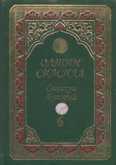

OSImom Buxoriyning «Sahih» asari asosidagi «Oltin silsila» turkumining 6-jildi.
Mazkur kitob islom olamidagi eng ishonchli hadis to'plamlaridan biri bo'lgan Imom Buxoriyning «Al-Jome' as-Sahih» asarining o'zbek tilidagi «Oltin silsila» turkumining 6-jildidir. Asarda fiqhiy va axloqiy mavzulardagi sahih hadislar hamda ularning batafsil sharhlari keltirilgan. Kitob keng kitobxonlar ommasi, talabalar va din ilmini o'rganuvchilar uchun mo'ljallangan.